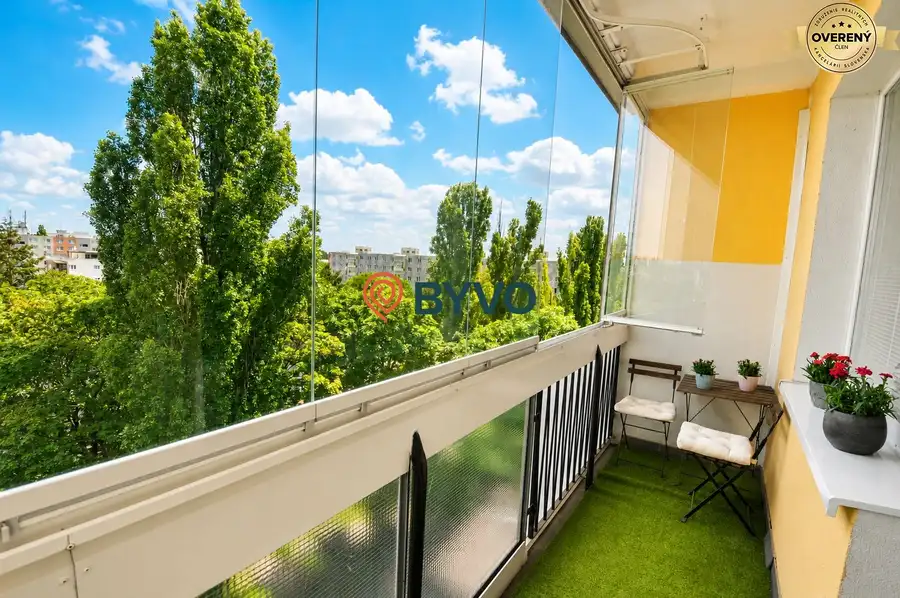
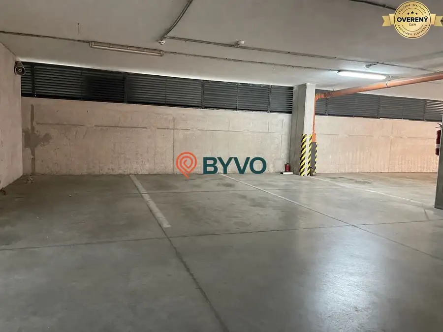
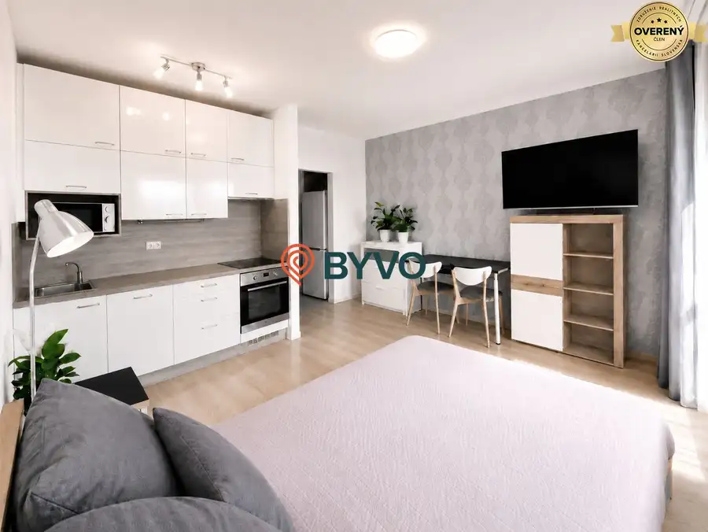

Predaj | zrekonštruovaná garsónka | Znievska
Petržalka, Bratislava
- Dispozícia1-izbový
- Plocha29 m²
- Poschodie9. z 12
- Stavúplne prerobený
- Vlastníctvoiné
- Energetická triedaB
O nehnuteľnosti
Byt sa nachádza na 9. poschodí zrekonštruovaného bytového domu a ponúka krásny otvorený výhľad. Celková výmera bytu vrátane lodžie je 29 m², pričom samotný byt má 25 m² a lodžia 4,8 m². K bytu prislúcha aj pivničná kobka s výmerou 1,38 m².
Garsónka prešla kompletnou rekonštrukciou a je vo veľmi dobrom stave. Má zrekonštruovanú kúpeľňu s WC, kuchynskú linku, nové obklady a dlažby, bezpečnostné vstupné dvere a upravenú priestrannú lodžiu.
Byt sa predáva vyprataný a pripravený na zariadenie podľa predstáv nového majiteľa. Nie sú potrebné žiadne ďalšie stavebné investície – na okamžité bývanie alebo prenájom stačí doplniť najmä posteľ, skriňu a základné vybavenie.
DISPOZÍCIA
Do bytu sa vstupuje cez predsieň, z ktorej je prístup do kúpeľne spojenej s WC a do hlavnej obytnej miestnosti. Tá poskytuje dostatok priestoru na kuchynský, oddychový aj spací kút a má priamy vstup na veľkú lodžiu.
INVESTIČNÁ PRÍLEŽITOSŤ
Nehnuteľnosť je vhodná nielen ako štartovacie bývanie, ale aj ako investičný byt určený na dlhodobý prenájom. Vďaka dobrému stavu, praktickej dispozícii a výbornej dopravnej dostupnosti ju možno po základnom zariadení ihneď ponúknuť na prenájom.
Novému majiteľovi vieme v prípade záujmu zabezpečiť aj vyhľadanie vhodného nájomníka a kompletnú administratívu spojenú s prenájmom.
LOKALITA
Znievska ulica ponúka kompletnú občiansku vybavenosť a veľmi dobré dopravné spojenie. Priamo pod bytovým domom sa nachádza električková zastávka s priamym spojením do centra a Starého Mesta.
V okolí sú obchody, služby, školy, škôlky, zdravotné stredisko, športoviská aj množstvo zelene. Veľkou výhodou je blízkosť Draždiaka, ktorý ponúka možnosti oddychu, prechádzok a športového vyžitia. Za bytovým domom sa nachádza kostol.
Bytový dom má udržiavaný a slušný vstup, čo zvyšuje komfort bývania aj atraktivitu nehnuteľnosti pri ďalšom prenájme.
HLAVNÉ VÝHODY
– kompletná rekonštrukcia
– bez potreby ďalších stavebných investícií
– 9. poschodie s krásnym výhľadom
– byt 25 m²
– veľká lodžia 4,8 m²
– celková výmera 29 m²
– pivničná kobka 1,38 m²
– byt sa predáva vyprataný
– možnosť okamžitého zariadenia a prenájmu
– električka priamo pod bytovým domom
– priame spojenie do Starého Mesta
– blízkosť Draždiaka a kompletnej občianskej vybavenosti
– možnosť zabezpečenia nájomníka
– vhodné na vlastné bývanie aj ako investícia
Cena zahŕňa kompletný právny a administratívny servis spojený s prevodom nehnuteľnosti.
Obhliadky a bližšie informácie telefonicky.
Parametre
| Celková rozloha | 29 m² |
|---|---|
| Úžitková plocha | 29 m² |
| Poschodie | 9/vyššie poschodie |
| Počet poschodí | 12 |
| Počet izieb | 1 |
| Vlastníctvo | iné |
| Stav | úplne prerobený |
| Odvoz odpadu | áno |
| Plyn | nie |
| Internet | optika |
| Kúpeľňa | vaňa |
| Vykurovanie | spoločné |
| Balkón | nie |
| Lódžia | áno |
| Terasa | nie |
| Pivnica | áno |
| Výťah | áno |
| Parkovanie | verejné |
| Postavené z | panel |
| Klimatizácia | nie |
| Káblová televízia | áno |
| Energetický certifikát | B |
| Predzáhradka | nie |
| Bezbariérový prístup | áno |
| Okná | plastové |
| Dátum zverejnenia | 11. 9. 2026 |
Kde to je
Mohlo by Vás zaujímať

Byt7 273 000 €NOVINKA - 3 izbový byt, dva balkóny, klimatizácia a výhľad do zelene Ružinov, Bratislava 3-izbový64 m²6. podlažie BYVO Ponúka na predaj kompletne zrekonštruovaný 3-izbový byt na Jadrovej ulici v obľúbenej a vyhľadávanej časti bratislavského Ružinova. Byt sa…
Ostatné 29 900 €Betliarska: Investičná kúpa garážového parkovacieho miesta Petržalka, Bratislava 12 m² Ponúkame na predaj garážové parkovacie miesto v podzemnej garáži na obľúbenej Betliarskej ulici v Bratislave – Petržalka. Parkovacie státie sa…
Byt6 159 900 €Na predaj zrekonštruovaná garsónka s veľkou lodžiou pri Draždiaku Petržalka, Bratislava 1-izbový25 m²10. podlažie Ponúkame na predaj kompletne zrekonštruovanú garsónku na vyhľadávanej Krásnohorskej ulici v Petržalke, v lokalite s výbornou dostupnosťou, množstvom…